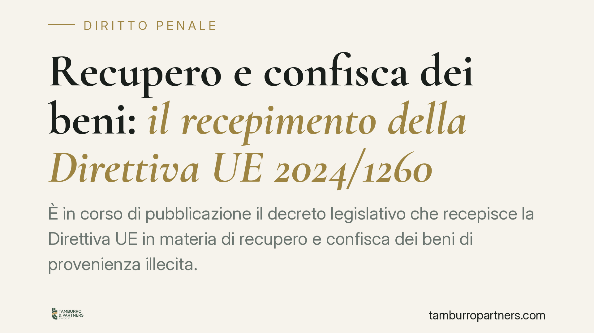

Recupero e confisca dei beni: il recepimento della Direttiva UE 2024/1260
È in corso di pubblicazione il decreto legislativo che recepisce la Direttiva UE in materia di recupero e confisca dei beni di provenienza illecita. Numero e data vanno confermati sulla Gazzetta Ufficiale. Il provvedimento potenzia gli strumenti di aggressione patrimoniale, con ricadute concrete per chi è coinvolto in procedimenti penali, per i terzi acquirenti e per gli assetti di compliance aziendale.

Il quadro: una nuova tappa della strategia patrimoniale europea
Il legislatore italiano ha dato attuazione alla Direttiva dell'Unione europea sul recupero e la confisca dei beni, inserita nel percorso che mira a rendere più efficace il contrasto alla criminalità economica e organizzata colpendone la ricchezza accumulata.
Allo stato, gli estremi esatti del decreto di recepimento — numero, data di approvazione e di pubblicazione in Gazzetta Ufficiale — devono essere verificati sulla fonte ufficiale. Lo stesso vale per la numerazione precisa della direttiva europea di riferimento. Trattiamo quindi i dati identificativi con cautela, concentrandoci sul contenuto e sulle implicazioni di sistema, che restano il profilo di maggiore interesse operativo.
Inquadramento normativo
La materia della confisca nel nostro ordinamento si articola su più strumenti. L'art. 240 del codice penale disciplina la confisca ordinaria, applicabile alle cose che servirono a commettere il reato o che ne costituiscono il prodotto o il profitto. L'art. 240-bis c.p. regola invece la cosiddetta confisca "in casi particolari" (già detta confisca allargata), che consente di aggredire beni di valore sproporzionato rispetto al reddito dichiarato, quando il titolare non ne giustifichi la provenienza.
A questi si affiancano le misure di prevenzione patrimoniali previste dal Codice antimafia (D.lgs. 159/2011) e, sul piano cautelare, il sequestro preventivo finalizzato alla confisca disciplinato dal codice di procedura penale. L'incidenza puntuale del nuovo decreto su ciascuna di queste disposizioni va riscontrata sul testo definitivo.
Un chiarimento è doveroso sul piano dei princìpi. Nella confisca estesa non si realizza una vera inversione dell'onere della prova in senso penalistico: la responsabilità per il reato resta da provare secondo le regole ordinarie e opera la presunzione d'innocenza. Ciò che grava sull'interessato è un onere di allegazione e giustificazione della provenienza lecita dei beni sproporzionati. La distinzione non è formale: la giurisprudenza costituzionale e di legittimità ha ripetutamente delimitato i confini di questo meccanismo proprio per preservarne la compatibilità con le garanzie fondamentali.
Sequestro e confisca: due momenti distinti
È utile tenere ferma la differenza tra i due istituti. Il sequestro è una misura cautelare, provvisoria: blocca la disponibilità del bene durante il procedimento, in vista di una possibile confisca. La confisca è invece la misura ablativa definitiva, che trasferisce il bene al patrimonio pubblico. Il sequestro può essere revocato; la confisca, una volta divenuta definitiva, no.
Il rafforzamento degli strumenti europei tende ad agevolare il tracciamento, il congelamento e l'esecuzione transfrontaliera di questi provvedimenti. La cooperazione tra Stati membri riduce i margini di sottrazione dei beni collocati in altri Paesi dell'Unione.
Implicazioni pratiche
Per le imprese e i professionisti il tema non riguarda soltanto chi sia direttamente indagato. L'aggressione patrimoniale può toccare terzi acquirenti dei beni confiscabili. Qui diventa centrale la posizione del terzo di buona fede: la possibilità di conservare il bene dipende dalla dimostrazione dell'effettività dell'acquisto e dell'assenza di collusione, aspetti che si provano con la tracciabilità delle operazioni e la coerenza della documentazione.
Per gli enti dotati di modelli organizzativi ex D.lgs. 231/2001, l'ampliamento degli strumenti ablativi rende ancora più rilevante la solidità dei presìdi interni, poiché il profitto del reato presupposto è tra i beni esposti a confisca.
Cosa fare in concreto
- Conservate la documentazione che attesta la provenienza e il valore dei beni di maggiore consistenza (atti di acquisto, flussi finanziari, dichiarazioni fiscali), così da poterne giustificare l'origine in caso di contestazione.
- Verificate la tracciabilità delle operazioni rilevanti e dei rapporti con controparti, curando la coerenza tra documenti contabili e sostanza economica delle transazioni.
- Aggiornate i modelli 231 valutando il rischio di confisca del profitto nei reati presupposto e la tenuta dei controlli sui flussi finanziari.
- Valutate con attenzione le posizioni dei terzi acquirenti, predisponendo evidenze dell'effettività e della buona fede dell'acquisto.
- È opportuno impostare la difesa patrimoniale sin dalle prime fasi del procedimento, quando le misure cautelari reali producono già effetti concreti sulla disponibilità dei beni.
Conclusioni
Il recepimento della direttiva conferma una direzione chiara: la ricchezza di origine illecita è un obiettivo primario dell'azione penale ed europea. La risposta più efficace è preventiva e documentale, costruita prima che il procedimento abbia inizio.
Contributo informativo a cura di Tamburro & Partners Avvocati - Avv. Giuseppe Tamburro. Non costituisce parere legale.
Ogni condominio ha una storia a sé.
Se gestisci un'amministrazione e vuoi un confronto su una specifica questione condominiale, scrivi allo studio. Ti rispondiamo entro un giorno lavorativo.